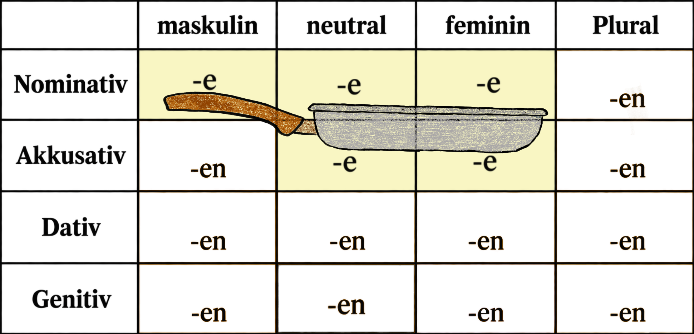
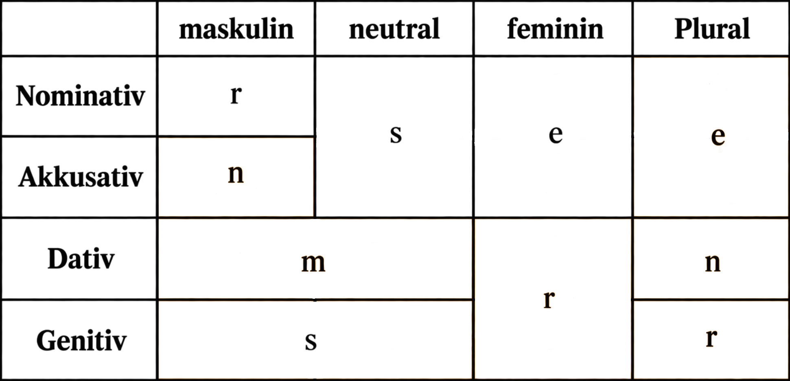

Grundlagen der Adjektivdeklination
Die deutsche Sprache möchte innerhalb einer Nominalgruppe drei Dinge grammatisch kennzeichnen:
- Genus
- Numerus
- Kasus
Welche Adjektive werden dekliniert?
Die deutsche Sprache unterscheidet zwischen verschiedenen Adjektivverwendungen:
- Attributive Verwendung: Ein schöner Tag.
- Adverbiale / Prädikative Verwendung: Die Studentin lernt fleißig Deutsch. Das Wetter ist schön.
Die Regeln der Adjektivdeklination
Regel 1
Immer wenn das Artikelwort eine Signalendung aufweist, hat das Adjektiv die Endung -e oder -en. In diesem Fall spricht man von der regelmäßigen Adjektivdeklination. Die Verteilung der Endungen -e und -en können Sie der untenstehenden Tabelle entnehmen.
Lerntipp 💡
Die Fläche der Endungen auf -e hat Ähnlichkeit mit der Form einer Pfanne. Vielleicht hilft Ihnen das, sich zu merken, wann ein Adjektiv in der regelmäßigen Deklination auf -e und wann auf -en endet.

Was war noch einmal eine Signalendung?
Die Signalendung ist der letzte Buchstabe des bestimmten Artikels.
Das bedeutet, dass z. B. bei der (Nominativ, maskulin, Singular) und bei der (Dativ, feminin, Singular) die Signalendung -r ist. Bei das (Nominativ, neutral, Singular) und bei das (Nominativ, neutral, Singular) ist die Signalendung -s.
⚠️ Vorsicht!
Im Genitiv maskulin und im Genitiv neutral trägt das Nomen eine Signalendung:
Die Jacke des freundlichen Professors ist schwarz.
Der Unterricht eines guten Professors ist lehrreich.
Wegen der bestandenen Prüfung überkam mich ein Gefühl großen Glücks.
Regel 2
Wenn das Artikelwort keine Signalendung hat oder es kein Artikelwort gibt, trägt das Adjektiv die Signalendung.
Zum Beispiel:
- Mein⏝ alter Lieblingsprofessor ist im Juli in Rente gegangen. [Der Professor; Nominativ, maskulin, Singular]
- Meine neue Professorin für Wirtschaftsinformatik ist sehr streng. [Die Professorin; Nominativ, feminin, Singular]
- Die Studenten haben viele anstrengende Prüfungen. [Die Prüfungen; Akkusativ, Plural]
- Nach dem Studium kann man ein⏝ eigenes Unternehmen gründen. [Das Unternehmen; Akkusativ, neutral, Singular]
